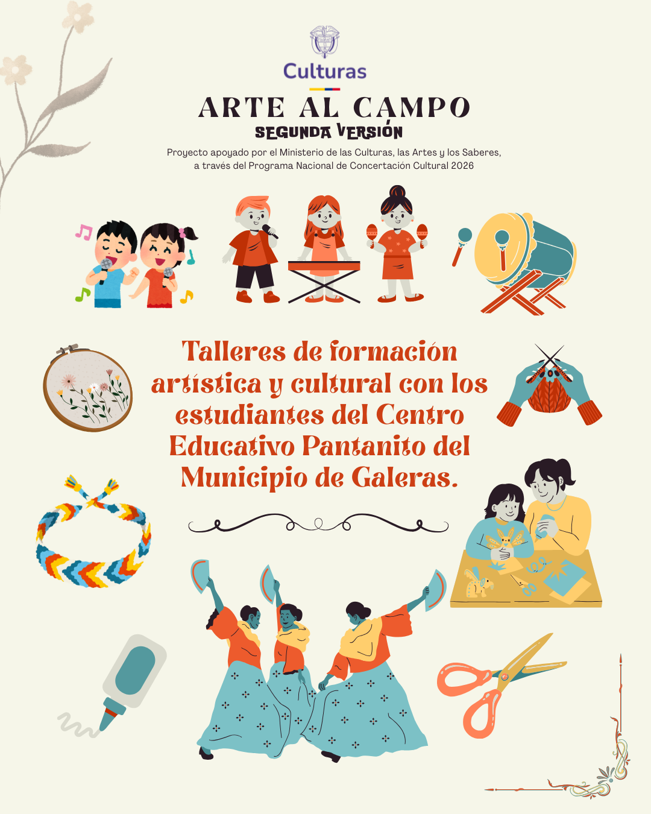
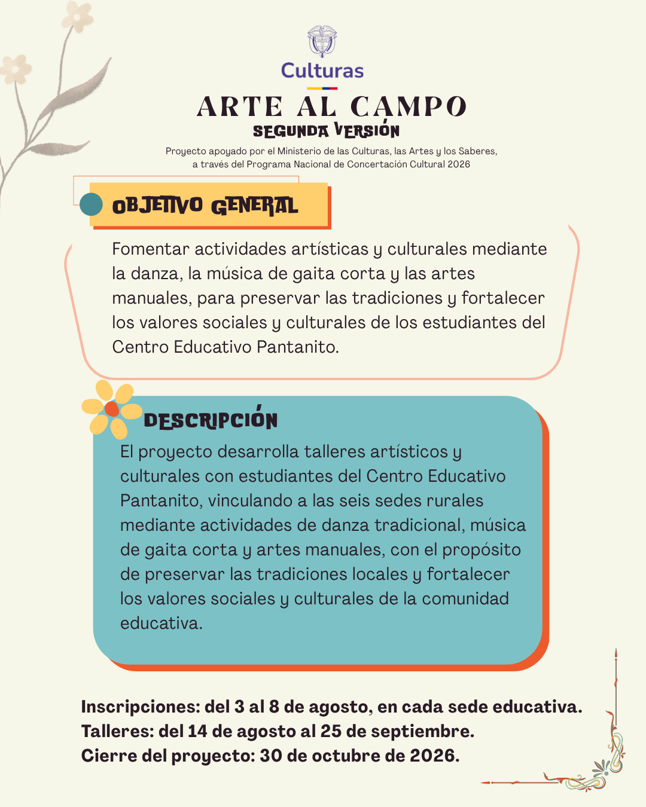
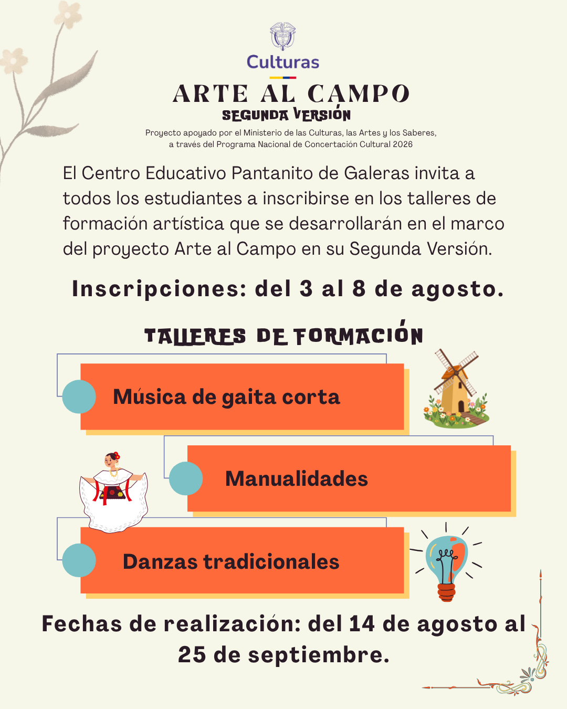

Música de gaita corta
Espacio para reconocer y fortalecer las tradiciones musicales de la región.
Proyecto institucional de cultura
Una iniciativa que conecta el arte, la creatividad, la cultura y el territorio para fortalecer las tradiciones de nuestra comunidad.
Arte al Campo es un proyecto de formación artística y cultural que vincula a los estudiantes del Centro Educativo Pantanito mediante actividades de danza tradicional, música de gaita corta y artes manuales, fortaleciendo la identidad cultural, los valores sociales y el sentido de pertenencia por la comunidad.
Espacio para reconocer y fortalecer las tradiciones musicales de la región.
Actividades creativas como tejido, accesorios, bisutería y trabajos manuales.
Formación cultural orientada a preservar expresiones propias del territorio.
Del X al X de X en cada sede educativa.
Del X de X al X de X.
X de X de X.
Próximamente se agregarán afiches o piezas informativas de esta versión.
Próximamente se agregarán fotografías de las actividades realizadas.
Del 3 al 8 de agosto en cada sede educativa.
Del 14 de agosto al 25 de septiembre.
30 de octubre de 2026.
Afiches oficiales del proyecto. Haz clic en una imagen para ampliarla.



Próximamente se agregarán fotografías de los talleres y encuentros realizados.